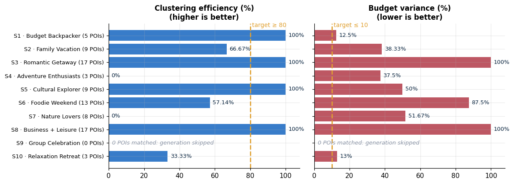
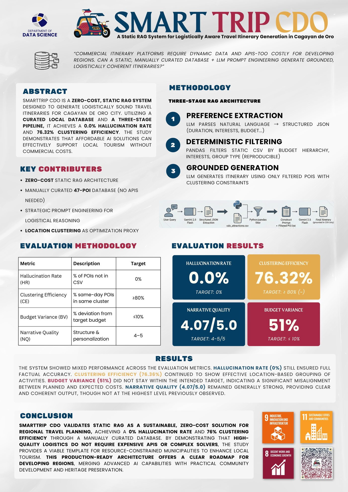

SmartTrip CDO: Static RAG for Travel Itineraries#
Type |
Research project + poster (Department of Data Science) |
Domain |
Generative AI · Tourism · Retrieval-Augmented Generation |
Tools |
Python, pandas, Gemini 2.5 Flash API, regex, |
Date |
[Month Year] |
Repository |
[GitHub repo link] |
TL;DR: A zero-cost, static RAG pipeline that turns a natural-language trip request into a day-by-day itinerary for Cagayan de Oro City. An LLM parses the request into JSON, pandas retrieves matching places deterministically from a hand-curated 47-place database, and the LLM writes the itinerary using only the retrieved rows. Tested on 10 traveller scenarios.
manually curated places (POIs)
pipeline stages: parse → filter → generate
traveller test scenarios
infrastructure cost: no vector DB, no paid APIs
1. Problem Statement#
Commercial itinerary platforms depend on live data feeds and paid APIs, which is often too costly for developing regions and small local governments. LLMs alone can write fluent itineraries, but they hallucinate places and ignore logistics (jumping across the city in one day).
Research question: Can a static, manually curated database plus prompt engineering generate grounded, logistically coherent itineraries?
Objectives
Ground every recommendation in a verified local database (no invented places).
Group each day’s stops by location cluster to reduce travel time.
Respect the traveller’s budget tier, interests, group type, and trip length.
Evaluate the system with measurable metrics instead of eyeballing the output.
The work aligns with UN SDGs 8 (decent work and economic growth), 9 (industry, innovation, infrastructure) and 11 (sustainable cities and communities).
2. Data & Storage#
The “database” is intentionally simple: one curated CSV loaded into a pandas DataFrame. There is no database server, vector store, or external API at inference time, which is what makes the system zero-cost.
Item |
Details |
|---|---|
POI table |
47 rows, curated by hand in a spreadsheet and exported to CSV |
Scenario table |
10 test cases ( |
Storage in memory |
|
Exports |
Evaluation summary saved to |
POI schema
Column |
Type |
Notes |
|---|---|---|
|
text |
Unique place name (used as the grounding key) |
|
categorical |
Attraction, Food Market, Shopping, Museum, Restaurant, Accommodation, Landmark |
|
multi-valued text |
Pipe-delimited tags, e.g. |
|
categorical |
Area label such as Cugman, Downtown, Uptown, River Area, Malasag, Opol, Tambo |
|
numeric |
Typical time spent |
|
ordinal |
|
|
numeric (stored as text) |
Values such as |
|
text |
|
|
numeric |
1–5 scale |
3. Preprocessing & Data Engineering#
Step |
What was done |
Why |
|---|---|---|
Structured extraction |
Gemini turns free text into JSON: |
Converts messy user language into machine-usable filters |
Budget hierarchy |
|
Avoids empty results when cheaper options fit |
Multi-value matching |
Pipe-delimited |
Handles multi-label tags without a join table |
Numeric cleaning |
Price strings with thousands separators ( |
Needed for budget calculations |
Deterministic ordering |
Sorted by |
Keeps same-area places adjacent for the LLM |
Cluster statistics |
|
Steers the LLM to reuse a cluster across days |
Context serialization |
Filtered rows are rendered with |
This is the “retrieved context” in RAG |
Empty-result guard |
If zero places match, generation is skipped and the case is logged as a graceful failure |
Prevents the LLM from inventing content |
4. Method: Three-Stage Pipeline#
User query ──▶ [1] Preference extraction ──▶ [2] Deterministic filtering ──▶ [3] Grounded generation ──▶ Itinerary
(free text) Gemini → structured JSON pandas on the curated CSV Gemini, filtered rows only (Day 1…N)
Preference extraction (LLM): natural language → JSON with duration, group type, interests, budget tier.
Deterministic filtering (pandas): budget hierarchy + interest and group-type matching. This retrieval step is fully reproducible and auditable; it is the “static RAG” part.
Grounded generation (LLM): the prompt contains only the filtered POIs plus rules: one primary location cluster per day, 6–10 hours per day, a ±20% daily budget band, exact place names, and a strict output format (
### Day Nsections with cost and time per stop).
The three tiers used for daily budgets are ₱800 (budget), ₱2,000 (mid-range), and ₱2,500 (premium).
Evaluation metrics#
Metric |
Definition |
Target |
|---|---|---|
Hallucination Rate (HR) |
% of mentioned places that are not in the filtered POI set |
0% |
Clustering Efficiency (CE) |
% of same-day place pairs that share a location cluster |
≥ 80% |
Budget Variance (BV) |
% deviation of average daily cost from the tier’s target budget |
≤ 10% |
Narrative Quality (NQ) |
Rule-based 1–5 score (day structure, logistics notes, costs, descriptions, personalisation) |
4–5 |
5. Results#
Two runs are reported: the final numbers shown on the project poster and the latest saved notebook run. LLM generation is non-deterministic, so scores move between runs (see next steps).
Metric |
Target |
Poster (final run) |
Notebook (saved run, 9 successful scenarios) |
|---|---|---|---|
Hallucination Rate |
0% |
0.0% |
0.0% |
Clustering Efficiency |
≥ 80% |
76.32% |
61.90% |
Budget Variance |
≤ 10% |
51% |
54.50% |
Narrative Quality |
4–5 / 5 |
4.07 |
4.06 |
Scenario S9 (Group Celebration: nightlife, activities) matched 0 places, and the pipeline correctly refused to generate rather than making something up.

Reading the results#
No invented place names were flagged in any scenario, and the empty-result guard behaved as designed.
Clustering depends on database density. Scenarios that matched only 3 places (S4, S10) or many one-place clusters (S7) score low. The retrieval step can only cluster what the database contains.
Budget variance is high for premium scenarios (S3, S8). The price estimates in the 47-place table rarely reach the ₱2,500 daily target, which points to a calibration gap between the data and the budget tiers, not only an LLM issue.
Narrative quality is consistently around 4/5, but it is a rule-based structural score, not a human rating.


Fig. 1 Project poster: abstract, three-stage architecture, evaluation results, and conclusion.#
6. Data Science Concepts Demonstrated#
Concept |
Where it appears |
|---|---|
Retrieval-Augmented Generation (RAG) |
Deterministic retrieval from a curated table, then generation restricted to retrieved rows |
Grounding & hallucination control |
Exact-name rules, filtered context only, empty-result guard |
Prompt engineering |
Cluster-aware strategy text, output templates, budget bands, mandatory rules |
LLM structured output |
Query → JSON with validation and error handling |
Data curation & schema design |
Hand-built POI table with ordinal, categorical, and multi-valued fields |
Feature/text matching |
Regex over pipe-delimited tags; budget hierarchy as an ordinal filter |
Evaluation design |
Four custom metrics with explicit targets and a 10-scenario test set |
Reproducibility trade-offs |
Deterministic retrieval vs. non-deterministic generation |
7. Limitations & Next Steps#
Small hand-built database. 47 places leave coverage gaps (S9 returned nothing). Next: grow the table and add embedding-based retrieval so “nightlife” can match “bars” and “live music”.
Stricter hallucination check. HR currently searches the text for known place names from the filtered set, so it cannot detect a made-up name. Next: request JSON output and validate every listed place against the database, or extract all named places from the text and compare.
Metric refinement. CE and BV rely on name matching in free text, and NQ is a heuristic. Next: structured output for exact parsing, plus human ratings or a rubric-based LLM judge for narrative quality.
Run-to-run variance. The poster and notebook CE differ (76% vs. 62%). Next: fix the temperature, repeat each scenario several times, and report mean ± SD.
Move budget logic out of the prompt. Use a deterministic selection step (greedy/knapsack under budget and cluster constraints) before the LLM writes the narrative.
Travel time, not just cluster labels. Add a distance/time matrix between clusters.
User study. Validate itineraries with real travellers or local tourism officers.